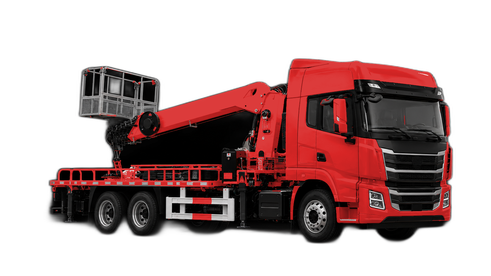

CUSTOM · SPECIAL PURPOSE VEHICLES
按场景选型 · 按型号核对 · 按需求沟通

系列外观示意，具体配置以所选型号实车为准。
PRODUCT OVERVIEW
本系列汇集高空作业、抽油机检修、现场保障、环卫以及专用运输等车型。各车的用途、底盘与公告参数不同，请按具体型号查看，不能套用统一的载重或尺寸。
先告诉我们作业对象、使用场景和运输条件，再共同确认车型、适用公告与选装需求。具体设备、外形和交付配置以双方确认的订单及实车为准。
用途
从实际作业与运输需求开始型号
逐项查看对应公告参数配置
按适用范围确认选装方案用途、型号和配置逐项核对，避免跨车型套用参数。
下方为现有公告车型的用途分组，具体能力以对应车型参数和设备为准。
高空作业车与抽油机检修车分别对应不同作业需求。作业设备、尺寸与配置需按型号单独确认。
救险车、指挥车与通信半挂车按实际现场需求选型；设备与功能配置需进一步沟通。
车厢可卸式垃圾车用于相应环卫场景；车厢与上装适配关系按型号和订单确认。
运材半挂车与危险品罐箱骨架运输半挂车各有对应运输对象。请先确认货物类型与适用运输条件。
点击型号查看对应详情，以下总质量与批次仅属于该行车型。
以上沿用对应车型公告信息。具体尺寸、设备与选装请进入型号详情核对；配置按订单约定。
同一用途可能对应多个型号，请核对型号后再确认需求。
图片为外观参考，公告参数、具体设备与交付配置以所选型号和订单为准。